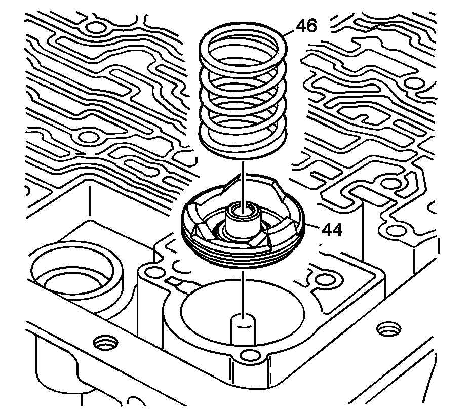

3-4 Accumulator Installation
3-4 Accumulator Installation

1. Inspect the 3-4 accumulator piston (44) for the following conditions:
^ Porosity
^ Cracks
^ Scoring
^ Nicks and scratches
2. Install the 3-4 accumulator piston oil seal ring (45) on the 3-4 accumulator piston (44).

3. Install the 3-4 accumulator piston (44) and seal assembly into the bore.
4. Inspect the 3-4 accumulator spring (46) for cracks.
Important: Some models do not use a 3-4 accumulator spring.
5. Install the 3-4 accumulator spring.